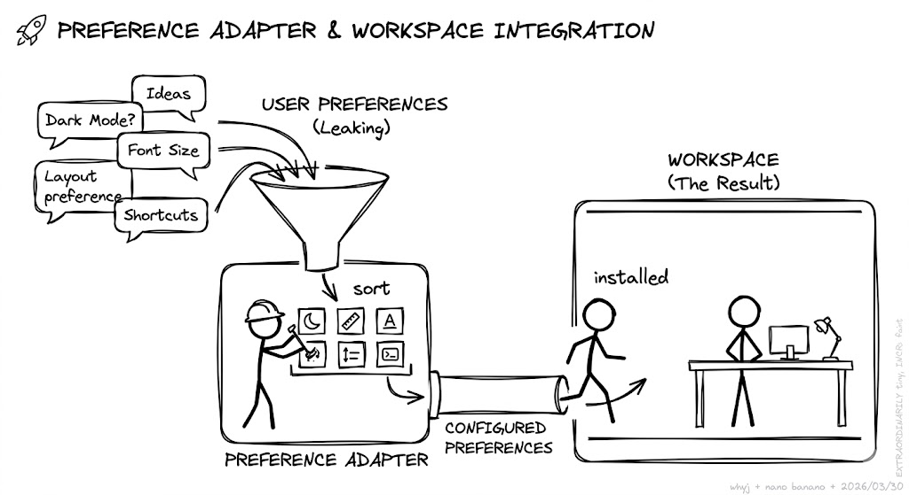
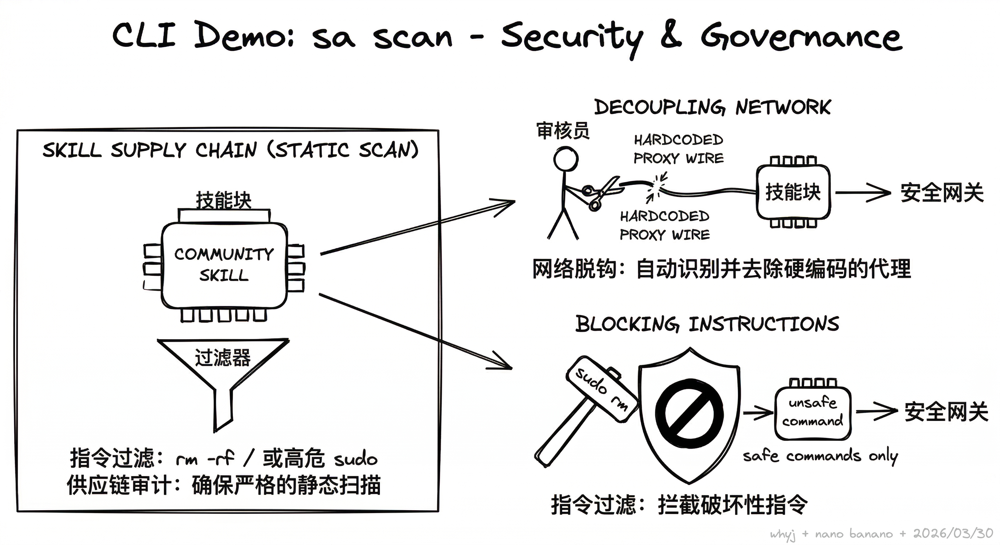

00 / Identity
Skill-Adapter
Evolution Skills in Your Workspace
Author: Yang Jing
Version: v0.1.3.1
Date: 2026.03.30
01 / Context
Evolution: Beyond Ephemeral Chats
- 现状: 开发者 90% 的工程直觉，输入的信息，都随着 Chat 窗口的关闭而彻底“蒸发”。
- 痛点: 公共 Skill 在私有环境下经常“水土不服”，难以跨越落地的“最后一公里”。
- 愿景: 打造无缝的 Adapter Layer，让每一次对话都成为进化燃料。

「 对话不应只是消耗， 不只是输入。如果它不能让 Skill 进化，那就是在浪费算力。 」
02 / Agenda
Agenda: Deconstructing Evolution
- Q1: 为什么现有的 Skill 机制无法处理深度工程中的“变数”？
- Q2: 为什么 CLI 是 Agent 与本地环境最无歧义的交互协议？
- Q3: 深度拆解：感知 (Info)、演进 (Evolve) 、扫描 (Scan) 、 分享（Share） 的逻辑。
- Q4: 典型场景、快速上手以及借助 Claude Code 开发的底层复盘。
03 / Motivation
Motivation: The Cost of Amnesia
- 盲目: Skill 的改动效果无法量化评估，收益全凭“感觉”， 况且每一个人的感觉不一样。
- 风险: 导入外部skill脚本如同开盲盒，存在潜在的 权限/安全 隐患。
- 断层: 公共 Skill 无法感知个人信息里面的 NPU/GPU 等物理环境差异。
- 损耗: 每次重开会话都要重复解释同样的习惯，认知摩擦极高。
- 现状: 尽管CC/Openclaw都会有全局的信息，但是显然当前的模型的能力还没有能够到充分用好

「 拒绝“一次性”知识，我们需要可积累的工程复利。 」
04 / Philosophy
UX: Why Choose CLI?
- Agent 原生: 对于 LLM 而言，Bash 是沟通物理世界最简洁的协议。
- 资源效率: CLI 极省 Token，相比 MCP 协议，通信载荷更轻。
- 组合力量: 像乐高一样可脚本化，能够无缝级联多个原子化的 Skill。
- 趋势: 协同软件纷纷转向 CLI 界面，这是面向 Agent 交互的终局。

「 复杂是 Agent 的敌人，而 CLI 是 Agent 的利刃。 」
05 / CLI Demo
sa info: Observation & Insight
- 自动扫描: 自动识别并挂载 ClaudeCode/OpenClaw 的活跃工作空间。
- 环境探测: 实时获取当前模型、Token 消耗倾向及环境依赖栈。
- 详情透视: 深度解析 Skill 元数据，量化其与本地环境的 匹配度。

「 在优化之前，先看清你的工程全貌。 」
06 / CLI Demo
sa evolve: Contextual Evolution
- Workspace 感知: 结合本地 Identity.md 注入上下文，拒绝“脑补”。
- 特征嗅探: 基于 Keyword Grep 策略精准检索 Session 报错轨迹。
- 安全变更: 默认不执行 --apply，支持通过 --log 预览每一行变更。

「 进化不是盲目覆盖，而是基于上下文的精准对齐。 」
07 / CLI Demo
sa scan: Security & Governance
- 网络脱钩: 自动识别并去除 Skill 中硬编码的代理，确保网络中立。
- 指令过滤: 拦截 rm -rf / 或高危 sudo 等可能导致破坏的指令。
- 供应链审计: 确保从社区导入的 Skill 经过了严格的 静态扫描。

「 信任但不放任。安全是工程化的第一前提。 」
08 / CLI Demo
sa share: Ecosystem Synergy
- 本地归档: 支持一键导出为 .zip 技能包，方便团队内部离线分发。
- 云端协同: 直接针对 GitHub 仓库生成 Pull Request 实现回馈。
- 标准化: 确保导出的 Skill 符合开源标准，降低复用门槛。

「 让优化的成果走出本地，完成从私有到公有的进化闭环。 」
09 / Scenarios
Scenarios: Engineering Practice
- 团队标准: 建立内部私有库，统一 Skill 质量门槛，减少协作噪音。
- 环境迁移: 让 Skill 动态贴合当前项目栈（如 CUDA 切换至 Ascend）。
- 平台治理: 在 Claude Code 与 OpenClaw 间实现逻辑对齐。
- 极简入门: 无需配置复杂的 Model，通过 Next Tips 引导上手。

「 场景定义功能，标准定义质量。 」
10 / Quick Start
Quick Start: Minimalist Setup
- Zero Model Config: 甚至不用配置 Claude 模型即可开始治理本地 Skill。
- Simplicity First: 精简命令集，只保留核心逻辑，降低心智负担。
- Progressive Tips: 通过 Next Tips 机制完成“发现-优化-分享”闭环。
// Install globally with one command
$ npm install -g @yangjingo/skill-adapter11 / Experience
Experience: Human-Agent Synergy
- Development: 45 Commits | 47 Files | 65% TODO 完成度。
- Boundaries: 测试用来兜底，这里的“测试人员”必须是人。
- CLI Rules: 严禁交互死锁；输出必须是 结构化 JSON。
- Learning: 向 Agent 学习如何节省上下文，实现深度磨合。

「 在 Agent 时代，人是逻辑的最后防线。干中学是唯一的进化路径。 」
12 / Summary
Summary: The Future of Skills
- Roadmap: M1-M2 (Decoupling) | M3-M4 (Autonomous AIE)。
- Position: Skill-Adapter 是为 AI 技能提供的 工程管理层。
- Logic: 保持轻量，持续重构。为人与 Agent 打造高效工作协议。

join us ！ https://github.com/yangjingo/skill-adapter
12 / Summary
Summary: The Future of Skills
- 关注: 如果觉得这个演进协议有意思，欢迎在 GitHub 点个 Star。
- 地址: https://github.com/yangjingo/skill-adapter.git

拒绝古法编程， "投降派" 和 Claude Code 一起进化